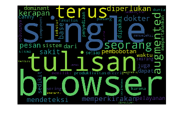

LSA
LSA#
# data visualisation and manipulation
import numpy as np
import pandas as pd
import matplotlib.pyplot as plt
from matplotlib import style
import seaborn as sns
#configure
# sets matplotlib to inline and displays graphs below the corressponding cell.
%matplotlib inline
style.use('fivethirtyeight')
sns.set(style='whitegrid',color_codes=True)
#import nltk
import nltk
from nltk.corpus import stopwords
from nltk.tokenize import word_tokenize,sent_tokenize
#preprocessing
from nltk.corpus import stopwords #stopwords
from nltk import word_tokenize,sent_tokenize # tokenizing
from nltk.stem import PorterStemmer,LancasterStemmer # using the Porter Stemmer and Lancaster Stemmer and others
from nltk.stem.snowball import SnowballStemmer
from nltk.stem import WordNetLemmatizer # lammatizer from WordNet
# for named entity recognition (NER)
from nltk import ne_chunk
# vectorizers for creating the document-term-matrix (DTM)
from sklearn.feature_extraction.text import TfidfVectorizer,CountVectorizer
#stop-words
stop_words=set(nltk.corpus.stopwords.words('english'))
---------------------------------------------------------------------------
ModuleNotFoundError Traceback (most recent call last)
Input In [1], in <cell line: 2>()
1 # data visualisation and manipulation
----> 2 import numpy as np
3 import pandas as pd
4 import matplotlib.pyplot as plt
ModuleNotFoundError: No module named 'numpy'
df=pd.read_csv('jurnal.csv', usecols =['Abstrak_indo'])
df.head(10)
| Abstrak_indo | |
|---|---|
| 0 | Toko Batik Tulis Madura merupakan salah satu t... |
| 1 | PT. Pos Indonesia (Persero) merupakan salah sa... |
| 2 | Kabupaten Pamekasan merupakan salah satu pusat... |
| 3 | Pemilihan supplier merupakan salah satu isu p... |
| 4 | ABSTRAK\r\nData yang terdapat pada SMA Wachid ... |
| 5 | Sumber daya manusia mutlak dibutuhkan untuk ke... |
| 6 | Deteksi manusia merupakan suatu aplikasi yang... |
| 7 | Aplikasi klasifikasi status gizi balita ini di... |
| 8 | Setiap perusahaan mengharapkan adanya hubungan... |
| 9 | Sebuah citra banyak diterapkan dalam berbagai ... |
def clean_text(headline):
le=WordNetLemmatizer()
word_tokens=word_tokenize(headline)
tokens=[le.lemmatize(w) for w in word_tokens if w not in stop_words and len(w)>3]
cleaned_text=" ".join(tokens)
return cleaned_text
# time taking
df['Abstrak_indo_cleaned']=df['Abstrak_indo'].apply(clean_text)
df.head()
| Abstrak_indo | Abstrak_indo_cleaned | |
|---|---|---|
| 0 | Toko Batik Tulis Madura merupakan salah satu t... | Toko Batik Tulis Madura merupakan salah satu t... |
| 1 | PT. Pos Indonesia (Persero) merupakan salah sa... | Indonesia Persero merupakan salah satu perusah... |
| 2 | Kabupaten Pamekasan merupakan salah satu pusat... | Kabupaten Pamekasan merupakan salah satu pusat... |
| 3 | Pemilihan supplier merupakan salah satu isu p... | Pemilihan supplier merupakan salah satu pentin... |
| 4 | ABSTRAK\r\nData yang terdapat pada SMA Wachid ... | ABSTRAK Data yang terdapat pada Wachid Hasyim ... |
df.drop(['Abstrak_indo'],axis=1,inplace=True)
df.head()
| Abstrak_indo_cleaned | |
|---|---|
| 0 | Toko Batik Tulis Madura merupakan salah satu t... |
| 1 | Indonesia Persero merupakan salah satu perusah... |
| 2 | Kabupaten Pamekasan merupakan salah satu pusat... |
| 3 | Pemilihan supplier merupakan salah satu pentin... |
| 4 | ABSTRAK Data yang terdapat pada Wachid Hasyim ... |
df['Abstrak_indo_cleaned'][0]
'Toko Batik Tulis Madura merupakan salah satu toko yang telah beroperasi sejak tahun 2011 dengan menggunakan website e-commerce Walau telah menggunakan model e-commerce website tersebut memiliki kekurangan yaitu belum fitur rekomndasi untuk memudahkan konsumen mencari barang yang ingin dibelinya Penelitian bertujuan membuat rekomendasi dengan decision untuk membantu pelanggan dalam memilih produk website Toko Batik Tulis Madura Teknik pengumpulan analis data terdiri dari Studi Literatur yang berhubungan dengan decision multi criterion Observasi dilakukan terhadap website Toko Batik Tulis Madura Interview dilakukan kepada pemilik website Toko Batik Tulis Madura Pembuatan implementasi pada Penelitian menggunakan model waterfall Jenis decision yang akan diimplementasikan adalah Multi Criteria Filtering Metode pembobotan yang digunakan pada Multi Criteria Filtering yaitu Decision Matrix Hasil ujicoba dengan jumlah sample percobaan sebanyak kali data perconbaan pencarian presentase akurasi adalah error adalah Hasil kelayakan dari beberapa kuisoner dihasilkan bahwa performa yang dimiliki tool cukup baik tool layak untuk diintegrasikan serta digunakan dalam website e-commerce Kata Kunci Decision Multi Criteria Filtering'
vect =TfidfVectorizer(stop_words=stop_words,max_features=1000)
# to play with. min_df,max_df,max_features etc...
vect_text=vect.fit_transform(df['Abstrak_indo_cleaned'])
print(vect_text.shape)
print(vect_text)
(60, 1000)
(0, 965) 0.345916940950532
(0, 74) 0.22892583178997186
(0, 974) 0.25689155580262774
(0, 455) 0.21829375696477538
(0, 566) 0.027321748445371784
(0, 793) 0.02947993532903489
(0, 798) 0.03006449946217725
(0, 998) 0.10345794294041542
(0, 916) 0.07126015599083284
(0, 815) 0.0691833881901064
(0, 902) 0.0522709587080435
(0, 1) 0.06037522681742574
(0, 172) 0.0712712402708651
(0, 545) 0.06746551297761273
(0, 995) 0.41510032914063844
(0, 151) 0.20755016457031922
(0, 577) 0.11446291589498593
(0, 940) 0.027321748445371784
(0, 507) 0.030669578755966955
(0, 997) 0.06389484363010381
(0, 81) 0.0522709587080435
(0, 279) 0.0484232965748123
(0, 982) 0.05345343020314881
(0, 516) 0.054573439241193844
(0, 410) 0.06422288895065693
: :
(59, 299) 0.5335072980252071
(59, 530) 0.038242168129767516
(59, 850) 0.03625013266330325
(59, 9) 0.03625013266330325
(59, 719) 0.06385719606030678
(59, 65) 0.03366356073892819
(59, 971) 0.05927858866946746
(59, 699) 0.05572714486708515
(59, 550) 0.05927858866946746
(59, 471) 0.08635688504183862
(59, 213) 0.04469535280300667
(59, 847) 0.050372017047417686
(59, 253) 0.05282540399622831
(59, 86) 0.05572714486708515
(59, 514) 0.05282540399622831
(59, 390) 0.05572714486708515
(59, 633) 0.2963929433473373
(59, 792) 0.05282540399622831
(59, 667) 0.21130161598491323
(59, 340) 0.050372017047417686
(59, 789) 0.05572714486708515
(59, 458) 0.06385719606030678
(59, 226) 0.14062076146709188
(59, 589) 0.2109311422006378
(59, 927) 0.14062076146709188
idf=vect.idf_
dd=dict(zip(vect.get_feature_names(), idf))
l=sorted(dd, key=(dd).get)
# print(l)
print(l[0],l[-1])
print(dd['yang'])
print(dd['wajah']) # police is most common and forecast is least common among the news headlines.
yang wajah
1.0
4.417726683613366
from sklearn.decomposition import TruncatedSVD
lsa_model = TruncatedSVD(n_components=10, algorithm='randomized', n_iter=10, random_state=42)
lsa_top=lsa_model.fit_transform(vect_text)
print(lsa_top)
print(lsa_top.shape) # (no_of_doc*no_of_topics)
[[ 2.94621783e-01 1.14284142e-02 -7.93177351e-02 1.43787806e-01
-1.69167977e-01 -1.33479482e-01 7.54971602e-04 -8.47349114e-02
5.56171720e-01 3.00287419e-01]
[ 3.12924002e-01 -1.13953528e-01 -1.16543532e-01 -7.31609178e-02
-5.87801002e-02 -1.37875420e-01 -1.60644013e-01 8.15194883e-02
2.82950028e-02 1.44308558e-01]
[ 3.15876446e-01 3.92275463e-02 -7.29732514e-02 2.12513524e-01
-1.91671745e-01 -1.75683185e-01 2.46247292e-02 -6.66666155e-02
5.10893907e-01 3.61791671e-01]
[ 2.36507649e-01 -9.40772468e-02 -1.60423693e-01 -2.25230320e-02
-7.09792431e-02 -6.12045093e-02 1.71505553e-01 -8.79197555e-02
1.09858280e-01 -9.60265005e-02]
[ 3.08898547e-01 -1.18551942e-02 -2.50981218e-02 -6.10313660e-02
7.77796435e-02 7.27812159e-02 -1.91285545e-01 9.48380084e-02
1.04618613e-01 6.25058256e-02]
[ 3.28663305e-01 -1.82776721e-01 -3.17252494e-01 -1.33209602e-01
-9.90653639e-02 -1.62090349e-01 3.36326668e-01 -1.61637384e-01
-1.31629912e-01 -1.64335883e-01]
[ 4.27946262e-01 2.94704485e-01 4.76146449e-02 5.75123807e-02
-7.23999708e-02 1.14502435e-01 -3.12596920e-02 3.36423399e-02
-1.62491374e-01 -9.26847859e-03]
[ 2.06619830e-01 -5.24109120e-02 -5.88223646e-02 -7.10187268e-03
5.71847397e-02 5.17456901e-01 -9.63139363e-02 -1.74683061e-01
-1.42302449e-01 2.81655768e-01]
[ 3.08734951e-01 -1.15983542e-01 -2.35216315e-01 -5.05485072e-02
-1.32531048e-01 -3.00206147e-01 5.69504751e-02 -4.29787434e-02
-1.88467495e-01 1.74017496e-02]
[ 3.62529482e-01 3.17590689e-01 3.17237202e-02 1.64151162e-01
-2.10384423e-01 5.24427569e-02 -3.28020126e-02 2.51434967e-02
-2.77162466e-01 -1.06143897e-01]
[ 2.74195225e-01 -1.89552214e-01 2.86643072e-01 2.11523319e-02
-1.65370491e-02 8.22133216e-03 7.09409754e-02 4.75416388e-02
-2.62065919e-02 -4.37803629e-03]
[ 1.91105901e-01 -1.62325866e-01 4.13012067e-01 -6.46133189e-02
-1.25745757e-01 -9.25824009e-02 -6.07335081e-02 -3.24186860e-01
1.51866531e-02 3.30553323e-02]
[ 2.09767906e-01 -1.76406690e-01 4.47329622e-01 -8.31612423e-02
-1.23838929e-01 -6.62368400e-02 -1.13424101e-01 -1.54445671e-01
4.54334654e-02 -1.28908656e-01]
[ 2.12227628e-01 -1.38439203e-01 2.77658498e-01 -9.28074801e-02
-7.91135886e-02 -6.52444166e-02 -2.02008346e-02 -2.39734848e-01
-6.35375881e-02 1.08807097e-02]
[ 3.16021362e-01 -8.31995711e-02 -2.46444803e-02 6.42020006e-02
7.86586170e-02 8.87098797e-02 -7.63012868e-02 5.47050781e-02
-6.24771337e-05 -1.23171345e-01]
[ 3.04239050e-01 -1.07945818e-02 1.38282194e-02 -5.49903161e-02
-4.50085975e-03 1.68598553e-02 -1.06371158e-02 9.10409227e-02
-5.35574620e-03 -7.78167312e-02]
[ 1.69149113e-01 -9.67361099e-02 2.90908488e-02 -3.15436817e-02
6.79844247e-03 -2.51542083e-02 -1.30106075e-01 8.18939486e-02
-8.94399874e-02 -1.77649655e-03]
[ 3.22902618e-01 2.10449474e-01 -2.31153938e-03 6.18048882e-02
-1.11612762e-01 3.85755064e-02 -3.89575114e-02 1.94313671e-02
-1.03548067e-01 -1.66170036e-01]
[ 2.12727258e-01 -7.58232864e-02 5.37444527e-02 4.84466563e-03
1.02877897e-02 6.73153392e-02 -4.99368344e-02 2.32642362e-01
3.88717793e-02 -2.21160017e-01]
[ 3.42661413e-01 -1.44100625e-01 4.11335684e-02 -6.29213664e-02
-5.85047411e-02 9.24512976e-02 -1.38890774e-01 2.68355501e-01
1.95725908e-01 -2.58100125e-01]
[ 2.35753805e-01 -1.17652694e-01 1.87464353e-01 4.00532420e-02
-1.17182859e-02 1.89878029e-02 3.73353156e-01 3.55334569e-01
-1.08959290e-01 2.52556250e-01]
[ 3.05561260e-01 1.66945623e-01 3.48331279e-02 -1.25915341e-01
1.44002399e-01 1.76407886e-02 -2.61474418e-02 1.24613094e-02
-1.59548285e-02 -2.63429860e-02]
[ 3.87959441e-01 -8.66903428e-02 6.39789907e-02 9.21737593e-02
8.19849910e-02 5.29339108e-02 -5.37744514e-02 9.40761976e-02
8.61201540e-02 -3.55841638e-02]
[ 3.31357511e-01 -1.49976051e-01 -2.04910791e-01 -1.47425906e-01
-2.70989910e-02 -1.38222243e-01 -2.15015436e-01 1.93099669e-02
-1.73971977e-01 1.83562214e-01]
[ 3.24399774e-01 -1.20393825e-01 -1.71787497e-01 -1.85304135e-01
-2.71379939e-02 -1.99183945e-01 -2.71655405e-01 1.05045274e-01
-1.63410051e-01 2.18997468e-01]
[ 2.31289034e-01 -7.25425220e-02 -4.82006864e-02 9.35634481e-02
8.25867479e-02 5.44332139e-02 -1.45098869e-02 -3.91395323e-02
5.16122112e-02 -9.53752602e-02]
[ 3.39407041e-01 -1.24407375e-01 -4.51961762e-02 3.88778475e-03
8.44040867e-02 1.87829590e-01 -3.12272417e-02 1.90374636e-02
6.21938870e-02 -2.32061879e-02]
[ 3.06626790e-01 -1.38557386e-01 -9.32135687e-02 -9.60307008e-02
3.94019734e-02 -8.49332502e-03 -2.73249751e-01 6.08465346e-02
-4.30785487e-02 1.59177116e-01]
[ 2.78001567e-01 -2.22017818e-01 4.95930659e-01 -7.92760695e-02
-1.25862677e-01 -9.36255937e-02 2.10357614e-02 -2.81173246e-01
-7.38827731e-02 1.46407117e-02]
[ 2.49036363e-01 2.36911152e-01 3.63225635e-02 -4.82275267e-02
9.56369235e-02 2.69481534e-02 5.46170893e-02 4.68100139e-03
-1.47698800e-01 -5.03690028e-02]
[ 4.77265191e-01 4.46569307e-01 4.42621410e-03 2.92425090e-01
-2.50842834e-01 -5.14436884e-02 -4.68434251e-03 -7.48690379e-02
7.57120932e-02 1.18011493e-01]
[ 3.87227047e-01 -2.10885587e-01 -2.00740195e-01 1.06113856e-02
-5.42217705e-02 2.64458803e-02 2.54569743e-01 -1.88595012e-01
1.16784793e-01 -8.17217591e-02]
[ 3.22522985e-01 -1.89584302e-01 -2.45085333e-01 -1.05041676e-01
-1.24392817e-01 -3.02432363e-01 -1.22974335e-01 3.41789658e-02
-2.70553424e-01 1.66302531e-01]
[ 3.69560463e-01 3.06001363e-01 5.39063730e-02 -7.94663913e-02
8.38055459e-02 5.80082110e-03 -4.26586818e-02 2.65794060e-03
8.33403802e-02 -1.12265129e-02]
[ 4.16253571e-01 3.99608365e-01 8.45872608e-02 -3.53065309e-01
4.17398617e-01 -1.16844109e-01 8.36731230e-02 -6.65411528e-02
8.48995266e-02 2.18778260e-02]
[ 3.58975298e-01 -1.63787652e-02 1.90722824e-02 -8.42578197e-02
3.31216942e-02 8.03172587e-02 -6.74173095e-02 9.92403382e-02
3.85270502e-02 -1.15766950e-01]
[ 2.94054348e-01 -1.47427891e-01 1.12533799e-01 8.19100559e-02
9.04816388e-02 2.25623752e-02 4.91313964e-02 1.25051697e-01
-3.14337451e-02 -4.21953517e-02]
[ 2.85413016e-01 -8.83665835e-02 -8.64933266e-02 -9.33302796e-02
4.20191527e-02 6.20446246e-02 -2.07168476e-01 7.76493766e-02
6.70873112e-02 8.89454709e-02]
[ 1.95464581e-01 -7.28084880e-02 -2.45257844e-02 1.80708281e-01
1.41741488e-01 1.15425379e-02 -2.37326580e-02 -5.83350296e-02
-1.99476072e-03 -4.52078784e-02]
[ 5.23078148e-01 5.27345483e-01 1.11532744e-02 2.84352222e-01
-2.64645719e-01 -1.48384694e-02 -2.70164926e-02 -5.03680911e-02
-1.18129549e-02 4.87513635e-02]
[ 2.64143993e-01 -2.02524180e-01 1.77401244e-02 6.00092243e-01
5.17005135e-01 -1.89162543e-01 -5.13595602e-02 -9.13706854e-02
-6.52679393e-02 -2.81275503e-02]
[ 3.68081643e-01 -1.49244395e-01 -3.00616064e-01 -8.43638482e-02
-8.45001323e-02 -1.05800652e-01 3.54837384e-01 -1.48137599e-01
-2.66088939e-02 -2.45592458e-01]
[ 2.29157054e-01 -1.62372235e-01 -1.17410221e-01 -4.70542706e-03
5.44871120e-02 4.04121807e-01 8.49536157e-02 -1.93539260e-01
-1.39568395e-02 1.14613959e-01]
[ 2.32441390e-01 -1.22078192e-01 2.63938588e-01 4.23154973e-02
-1.97394029e-02 1.36228268e-02 4.87419986e-01 4.47948007e-01
-1.16807873e-01 3.10895262e-01]
[ 2.84569984e-01 -7.72602273e-02 -7.06765393e-02 -6.72696196e-03
3.77920093e-02 1.01898384e-01 5.58460858e-02 -1.94573671e-02
1.09199747e-01 -2.92258428e-02]
[ 2.84908353e-01 -1.19233316e-01 -5.10572512e-02 -3.52227063e-02
5.36039382e-02 -5.05773990e-02 -5.45925408e-02 1.21324547e-01
-5.14966662e-02 -1.30409615e-01]
[ 4.27492831e-01 3.96329391e-01 3.15498946e-02 1.88772170e-01
-2.50688392e-01 5.06168314e-02 1.24871340e-02 -1.76863123e-02
-2.39177123e-01 -1.51638909e-01]
[ 2.91330573e-01 3.11270757e-02 2.52859920e-03 -5.20057157e-02
-5.16910349e-04 8.57085756e-02 -7.59393092e-04 5.55740171e-02
-1.33050710e-01 -1.07555601e-01]
[ 2.96561418e-01 -1.27034166e-01 -1.59910727e-01 -4.47533612e-02
-1.82937092e-02 9.84905407e-02 1.96181516e-01 -8.39100710e-02
1.62707134e-01 -2.01746556e-01]
[ 2.82542936e-01 -2.21561065e-01 4.99171636e-01 -1.06810558e-01
-1.28727619e-01 -1.05370976e-01 -8.48078041e-02 -2.66133199e-01
-4.49391570e-02 -3.01895309e-02]
[ 2.98743463e-01 -9.95815664e-02 -1.76403576e-01 -4.97346578e-02
-3.05501442e-02 -2.00507927e-01 3.71121033e-02 -2.01861521e-02
-1.53397085e-01 -7.53796614e-03]
[ 2.53060974e-01 -7.27431392e-02 -9.03814422e-02 -8.51409129e-02
3.26908061e-02 -1.03369785e-01 -2.56108596e-01 7.52080475e-02
-3.04855231e-02 1.35000731e-01]
[ 3.01178252e-01 -6.81018539e-02 7.56774406e-02 -9.67337150e-03
-5.42541949e-02 8.47597296e-02 -1.57291643e-01 2.54835256e-01
1.23751001e-01 -1.84680506e-01]
[ 2.33886118e-01 -1.40800860e-01 2.27033463e-01 2.54544873e-02
-4.48763104e-02 4.56977652e-02 2.90069905e-01 3.36463209e-01
-3.61095618e-02 1.98010624e-01]
[ 3.10694930e-01 -1.38847530e-01 4.37071887e-02 -6.90970700e-02
-8.06961245e-02 1.30839864e-01 -1.91161306e-01 2.51612524e-01
2.99845918e-01 -2.81382092e-01]
[ 3.69727622e-01 4.01019871e-01 8.09890299e-02 -3.91607673e-01
4.68897350e-01 -1.17085069e-01 1.29905760e-01 -9.10446230e-02
1.17166844e-01 5.82217126e-02]
[ 3.35870701e-01 -1.36571582e-01 -1.55102160e-01 -1.82984299e-02
-2.86832870e-02 1.72877319e-01 1.84895625e-01 -1.54482987e-01
1.54645637e-01 -7.39264869e-02]
[ 2.03018261e-01 2.26867552e-01 7.88259825e-02 -2.97149978e-01
3.72656205e-01 -9.05942451e-02 1.16811192e-01 -3.69112503e-02
7.09233394e-02 6.70140046e-02]
[ 2.44245394e-01 -1.79759191e-01 3.37879119e-02 6.08978977e-01
5.30198941e-01 -1.66714422e-01 -5.29488360e-02 -8.47273749e-02
-1.00664340e-01 -3.95458842e-02]
[ 2.89591852e-01 -1.29533018e-01 -1.13819561e-01 -3.66421539e-02
5.90078468e-02 6.18471878e-01 -3.14672875e-02 -2.44915387e-01
-1.64380730e-01 2.83849336e-01]]
(60, 10)
# most important words for each topic
vocab = vect.get_feature_names()
for i, comp in enumerate(lsa_model.components_):
vocab_comp = zip(vocab, comp)
sorted_words = sorted(vocab_comp, key= lambda x:x[1], reverse=True)[:10]
print("Topic "+str(i)+": ")
for t in sorted_words:
print(t[0],end=" ")
print("\n")
Topic 0:
yang citra dengan pada untuk dari metode sistem dalam data
Topic 1:
citra tulisan tangan pengenalan batik fitur ekstraksi tekstur ciri wajah
Topic 2:
game mobile pembelajaran android teknologi gerakan virtual reality sapi algoritma
Topic 3:
arsitektur citra bangkalan enterprise batik togaf informasi dinas perdagangan instansi
Topic 4:
arsitektur tangan tulisan pengenalan enterprise togaf telapak sistem bangkalan informasi
Topic 5:
gizi status pasien balita makanan keputusan pendukung menu bayes naïve
Topic 6:
kriteria reality virtual karyawan augmented keputusan dunia teknologi second life
Topic 7:
reality virtual dokumen augmented penjadwalan dunia second life hujan kuliah
Topic 8:
batik commerce website tulis model decision toko madura penjadwalan pamekasan
Topic 9:
gizi batik reality status virtual peramalan commerce website tulis balita
from sklearn.decomposition import LatentDirichletAllocation
lda_model=LatentDirichletAllocation(n_components=10,learning_method='online',random_state=42,max_iter=1)
# n_components is the number of topics
lda_top=lda_model.fit_transform(vect_text)
print(lda_top.shape) # (no_of_doc,no_of_topics)
print(lda_top)
(60, 10)
[[0.0132859 0.0132856 0.88042955 0.01328551 0.01328557 0.01328544
0.01328562 0.01328564 0.0132856 0.01328556]
[0.01259872 0.01259861 0.0125986 0.01259843 0.01259861 0.88661199
0.01259852 0.01259863 0.01259939 0.0125985 ]
[0.01332315 0.01332277 0.8800941 0.0133228 0.01332282 0.01332293
0.0133229 0.01332297 0.01332273 0.01332284]
[0.01402815 0.01402798 0.01402811 0.01402833 0.01402819 0.01402816
0.01402831 0.01402936 0.87374516 0.01402823]
[0.01282357 0.01282312 0.01282339 0.01282324 0.01282342 0.01282331
0.01282341 0.88458985 0.01282333 0.01282335]
[0.87097585 0.01433571 0.0143359 0.01433603 0.01433589 0.01433614
0.01433604 0.01433604 0.01433616 0.01433623]
[0.01173059 0.89442335 0.01173056 0.01173047 0.01173044 0.01173229
0.0117305 0.01173075 0.01173043 0.01173062]
[0.01552092 0.01552032 0.01552135 0.01552021 0.01552035 0.01552022
0.01552034 0.86031577 0.01552017 0.01552034]
[0.0148776 0.01487743 0.01487731 0.01487718 0.01487739 0.01487764
0.01487751 0.86610312 0.01487744 0.01487739]
[0.01380579 0.01380551 0.01380568 0.01380578 0.01380575 0.0138062
0.01380569 0.01380583 0.01380547 0.8757483 ]
[0.0131525 0.01315248 0.01315267 0.01315245 0.01315258 0.01315272
0.88162705 0.0131526 0.01315254 0.01315241]
[0.01680211 0.01680199 0.01680202 0.01680178 0.01680226 0.01680164
0.016802 0.01680205 0.01680197 0.84878219]
[0.01488193 0.01488192 0.01488217 0.01488219 0.01488207 0.01488205
0.01488378 0.01488215 0.01488211 0.86605964]
[0.01688767 0.01688761 0.01688733 0.01688744 0.01688749 0.01688771
0.84801214 0.01688747 0.01688755 0.0168876 ]
[0.01221371 0.89007874 0.0122135 0.0122135 0.0122134 0.01221344
0.01221346 0.01221333 0.0122135 0.01221343]
[0.01365325 0.8771209 0.01365313 0.01365315 0.01365409 0.01365341
0.01365298 0.0136532 0.01365298 0.01365291]
[0.01548998 0.01549299 0.01549023 0.01548999 0.01549027 0.01549027
0.01548989 0.86058617 0.01548995 0.01549025]
[0.0120798 0.01207973 0.01207964 0.01207959 0.0120796 0.89128323
0.01207957 0.01207967 0.01207952 0.01207964]
[0.01602275 0.85579662 0.01602279 0.01602233 0.01602254 0.01602309
0.01602269 0.01602243 0.01602242 0.01602234]
[0.0139036 0.0139034 0.01390308 0.01390317 0.01390333 0.87486963
0.0139035 0.01390326 0.01390349 0.01390354]
[0.86201715 0.01533153 0.01533136 0.01533129 0.01533133 0.01533175
0.0153315 0.01533146 0.01533123 0.01533139]
[0.01357935 0.01357923 0.01357928 0.01357977 0.01357911 0.01357934
0.87778637 0.01357913 0.01357923 0.01357919]
[0.01144051 0.01144045 0.89703522 0.01144054 0.01144036 0.01144062
0.01144058 0.01144044 0.01144058 0.01144069]
[0.87714042 0.01365077 0.01365093 0.01365094 0.01365103 0.01365128
0.01365112 0.01365111 0.01365124 0.01365117]
[0.01245274 0.01245202 0.01245191 0.01245187 0.01245186 0.01245243
0.01245195 0.01245191 0.88793137 0.01245195]
[0.01359663 0.01359622 0.01359602 0.01359609 0.01359621 0.01359618
0.0135961 0.87763421 0.0135962 0.01359614]
[0.88663622 0.01259566 0.01259587 0.01259622 0.01259564 0.01259569
0.01259577 0.01259581 0.01259576 0.01259736]
[0.01299844 0.01299766 0.01299755 0.01299763 0.01299764 0.01299775
0.01299778 0.01299774 0.88302007 0.01299775]
[0.01252485 0.01252483 0.01252474 0.01252479 0.01252504 0.01252492
0.88727652 0.01252457 0.01252483 0.01252489]
[0.01542146 0.01542112 0.01542088 0.01542101 0.01542099 0.01542107
0.86120992 0.01542115 0.01542099 0.0154214 ]
[0.01111608 0.01111583 0.01111592 0.01111602 0.01111584 0.89995655
0.01111598 0.01111587 0.01111594 0.01111597]
[0.90255136 0.01082757 0.01082758 0.01082762 0.0108276 0.01082767
0.01082763 0.01082763 0.01082756 0.01082779]
[0.01219822 0.01219802 0.01219811 0.012198 0.01219806 0.89021709
0.0121979 0.01219813 0.01219832 0.01219815]
[0.01189952 0.01189894 0.01189913 0.01189934 0.01189922 0.89290726
0.01189917 0.01189919 0.01189912 0.0118991 ]
[0.88752707 0.01249668 0.01249841 0.01249695 0.01249663 0.01249693
0.01249685 0.0124968 0.01249684 0.01249685]
[0.0117324 0.01173267 0.01173262 0.01173252 0.01173254 0.89440684
0.01173273 0.01173259 0.01173256 0.01173252]
[0.01263515 0.01263501 0.01263503 0.01263511 0.01263506 0.01263507
0.88628438 0.01263489 0.01263526 0.01263503]
[0.85796708 0.0157814 0.01578143 0.01578138 0.01578187 0.01578151
0.01578147 0.01578134 0.01578144 0.01578107]
[0.01411919 0.87292684 0.01411932 0.01411892 0.01411928 0.0141193
0.01411936 0.01411935 0.01411925 0.01411918]
[0.01177363 0.01177335 0.01177347 0.01177351 0.01177342 0.89403868
0.0117735 0.01177347 0.01177347 0.01177349]
[0.01390989 0.01391008 0.01390969 0.01390979 0.01390957 0.01390981
0.01390983 0.01390974 0.01390982 0.87481176]
[0.0122993 0.01229906 0.0122991 0.88930715 0.012299 0.01229929
0.01229912 0.01229912 0.01229904 0.01229982]
[0.01562719 0.01562684 0.01562688 0.01562694 0.01562651 0.85935868
0.01562675 0.01562686 0.01562652 0.01562684]
[0.01354234 0.01354182 0.01354173 0.01354171 0.0135417 0.87812387
0.01354188 0.01354167 0.0135418 0.01354149]
[0.01390339 0.01390337 0.01390343 0.8748689 0.01390339 0.01390352
0.01390346 0.01390362 0.01390352 0.01390341]
[0.01176873 0.0117689 0.01176869 0.01176864 0.01176875 0.89408145
0.01176865 0.01176873 0.01176873 0.01176874]
[0.01367608 0.01367618 0.01367592 0.01367616 0.01367587 0.01367714
0.01367619 0.01367606 0.0136761 0.8769143 ]
[0.01353564 0.01353562 0.01353571 0.01353568 0.01353554 0.01353593
0.87817901 0.01353564 0.01353559 0.01353563]
[0.01265084 0.01265082 0.01265086 0.88614168 0.01265079 0.01265089
0.01265083 0.01265172 0.01265071 0.01265087]
[0.01256482 0.01256466 0.01256487 0.01256478 0.88691568 0.01256491
0.01256488 0.01256477 0.01256481 0.0125658 ]
[0.88877129 0.01235885 0.01235869 0.01235865 0.01235872 0.01235879
0.01235866 0.01235878 0.01235888 0.0123587 ]
[0.01461413 0.01461394 0.01461385 0.01461392 0.01461396 0.01461414
0.01461379 0.01461433 0.86847401 0.01461393]
[0.88196516 0.01311476 0.01311474 0.01311468 0.01311478 0.01311496
0.01311499 0.01311631 0.01311478 0.01311483]
[0.01415882 0.01415859 0.01415859 0.01415863 0.01415857 0.0141594
0.87257175 0.01415839 0.0141587 0.01415858]
[0.01235553 0.0123553 0.01235524 0.01235533 0.01235527 0.01235537
0.01235535 0.01235533 0.01235539 0.8888019 ]
[0.01484777 0.01484708 0.01484757 0.86637358 0.01484698 0.0148474
0.0148475 0.01484758 0.01484728 0.01484727]
[0.0114833 0.01148321 0.01148331 0.01148425 0.01148333 0.89664945
0.01148329 0.0114834 0.0114832 0.01148326]
[0.83091086 0.01878746 0.01878821 0.01878801 0.01878737 0.01878739
0.0187878 0.01878788 0.01878716 0.01878787]
[0.01544209 0.86102309 0.01544186 0.01544171 0.01544162 0.01544159
0.01544173 0.01544173 0.01544176 0.01544284]
[0.01443322 0.01443331 0.01443355 0.01443317 0.01443312 0.01443325
0.01443308 0.87010111 0.01443294 0.01443324]]
sum=0
for i in lda_top[0]:
sum=sum+i
print(sum)
1.0000000000000002
# composition of doc 0 for eg
print("Document 0: ")
for i,topic in enumerate(lda_top[0]):
print("Topic ",i,": ",topic*100,"%")
Document 0:
Topic 0 : 1.3285901487371006 %
Topic 1 : 1.3285602228967217 %
Topic 2 : 88.04295538450366 %
Topic 3 : 1.3285513698445734 %
Topic 4 : 1.3285565180898746 %
Topic 5 : 1.328544017241651 %
Topic 6 : 1.328561952865611 %
Topic 7 : 1.3285638706138307 %
Topic 8 : 1.328560145287098 %
Topic 9 : 1.3285563699198957 %
print(lda_model.components_)
print(lda_model.components_.shape) # (no_of_topics*no_of_words)
[[0.90038213 0.83125137 0.81044032 ... 0.96844698 0.94291339 0.84881495]
[0.91109702 0.87067832 0.63945693 ... 0.87580363 0.97441072 1.05082202]
[0.6888835 0.83795528 0.88243727 ... 0.96600802 0.89495942 0.80835129]
...
[0.75684549 0.93072313 0.86666127 ... 0.84711017 0.77235137 0.81364776]
[0.93761201 0.77397308 0.80687726 ... 0.88485764 0.8925799 0.81234621]
[0.76464727 0.76478814 0.93785791 ... 0.88288521 0.83466938 0.72555995]]
(10, 1000)
# most important words for each topic
vocab = vect.get_feature_names()
for i, comp in enumerate(lda_model.components_):
vocab_comp = zip(vocab, comp)
sorted_words = sorted(vocab_comp, key= lambda x:x[1], reverse=True)[:10]
print("Topic "+str(i)+": ")
for t in sorted_words:
print(t[0],end=" ")
print("\n")
Topic 0:
browser single tulisan terus seorang augmented diperlukan kerapan dokter memperkirakan
Topic 1:
pasien kuliah mahasiswa sistem yogyakarta kinerja bangkalan least dihasilkan histogram
Topic 2:
batik berbeda self player tetap penyampaian serta seringkali selain pendeteksian
Topic 3:
kriteria strategy bobot dikarenakan mudah first tentunya mendekripsi smarter pencarian
Topic 4:
game nilai lain 2010 karapan pengelolaan menjadikan pengukuran puskesmas pemetaan
Topic 5:
citra yang second terjadi dihasilkan smartphone konsep perusahaan tentunya percobaan
Topic 6:
senyum wajah jari machine finite mempertahankan platform permainan memecahkan tes
Topic 7:
budaya gizi khususnya kepada kurang minimal sedikit kamera indikator balita
Topic 8:
smoothing tersebut keragaman memperoleh mirip training supply persero part didasarkan
Topic 9:
bobot sulit panoramic satu basic stok kali algoritma korespondensi adalah
pip install wordcloud
Collecting wordcloud
Downloading https://files.pythonhosted.org/packages/a7/f0/f7384c323c1fc7149573455f9633ef063c7b4d85c64d419b711bbca9ed29/wordcloud-1.8.1-cp37-cp37m-win_amd64.whl (154kB)
Requirement already satisfied: matplotlib in c:\users\asus\anaconda3\lib\site-packages (from wordcloud) (3.0.3)
Requirement already satisfied: numpy>=1.6.1 in c:\users\asus\anaconda3\lib\site-packages (from wordcloud) (1.16.2)
Requirement already satisfied: pillow in c:\users\asus\anaconda3\lib\site-packages (from wordcloud) (5.4.1)
Requirement already satisfied: cycler>=0.10 in c:\users\asus\anaconda3\lib\site-packages (from matplotlib->wordcloud) (0.10.0)
Requirement already satisfied: kiwisolver>=1.0.1 in c:\users\asus\anaconda3\lib\site-packages (from matplotlib->wordcloud) (1.0.1)
Requirement already satisfied: pyparsing!=2.0.4,!=2.1.2,!=2.1.6,>=2.0.1 in c:\users\asus\anaconda3\lib\site-packages (from matplotlib->wordcloud) (2.3.1)
Requirement already satisfied: python-dateutil>=2.1 in c:\users\asus\anaconda3\lib\site-packages (from matplotlib->wordcloud) (2.8.0)
Requirement already satisfied: six in c:\users\asus\anaconda3\lib\site-packages (from cycler>=0.10->matplotlib->wordcloud) (1.12.0)
Requirement already satisfied: setuptools in c:\users\asus\anaconda3\lib\site-packages (from kiwisolver>=1.0.1->matplotlib->wordcloud) (40.8.0)
Installing collected packages: wordcloud
Successfully installed wordcloud-1.8.1
Note: you may need to restart the kernel to use updated packages.
from wordcloud import WordCloud
# Generate a word cloud image for given topic
def draw_word_cloud(index):
imp_words_topic=""
comp=lda_model.components_[index]
vocab_comp = zip(vocab, comp)
sorted_words = sorted(vocab_comp, key= lambda x:x[1], reverse=True)[:50]
for word in sorted_words:
imp_words_topic=imp_words_topic+" "+word[0]
wordcloud = WordCloud(width=600, height=400).generate(imp_words_topic)
plt.figure( figsize=(5,5))
plt.imshow(wordcloud)
plt.axis("off")
plt.tight_layout()
plt.show()
# topic 0
draw_word_cloud(0)

# topic 1
draw_word_cloud(1)